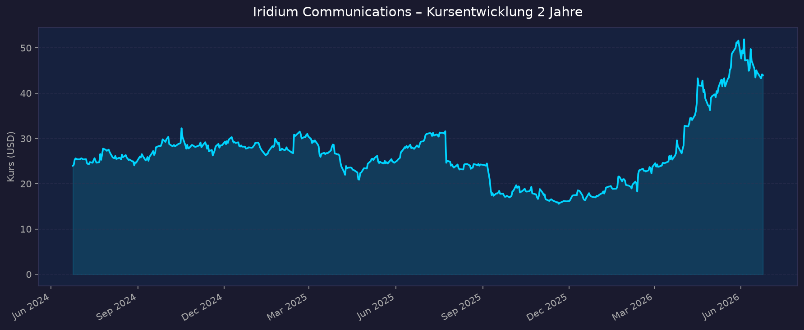
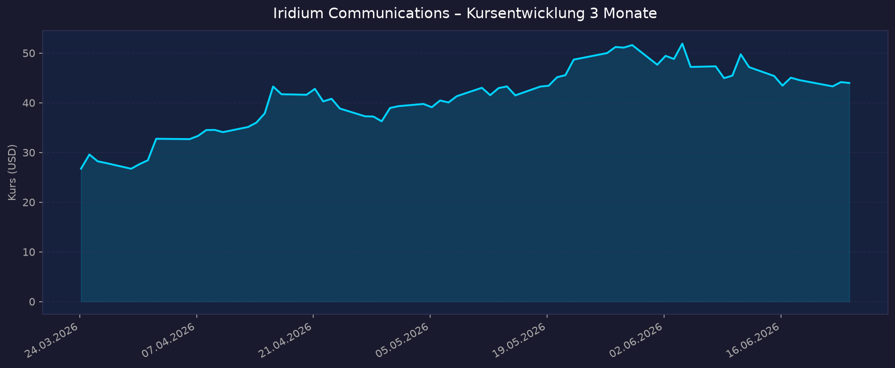

Weltraum-Einordnung: Direkter Pure-Play, aber PROFITABEL. Iridium betreibt eine eigene LEO-Konstellation aus 66 aktiven Satelliten (+ Ersatzsatelliten) und ist im Gegensatz zu den meisten Weltraum-Pure-Plays (Rocket Lab, AST SpaceMobile etc.) seit Jahren profitabel, zahlt Dividende und kauft Aktien zurück. Daher ist eine volle KGV-Analyse möglich (KGV ~44). Geschäft: Satelliten-Sprach-/Datendienste, kommerzielles und staatliches IoT, neu: Direct-to-Device (NTN Direct) und PNT (Positionierung/Navigation/Timing). Kernrisiko: hohe Verschuldung (D/E ~3,8 / 382 %).
📈 1. Kursentwicklung
Aktueller Kurs: 43,98 USD | Veränderung YTD 2026: ca. +185 %
Chart – 2 Jahre

Chart – 3 Monate

| Zeitraum | Kurs Start | Kurs Ende | Veränderung |
|---|---|---|---|
| 2 Jahre | 23,96 USD | 43,98 USD | +83,6 % |
| 3 Monate | 26,74 USD | 43,98 USD | +64,5 % |
| 52-Wochen-Hoch | — | 53,83 USD (03.06.2026) | — |
| 52-Wochen-Tief | — | 15,57 USD (21.11.2025) | — |
Einordnung: Außergewöhnlich volatiles Jahr. Nach einem Absturz auf das 52-Wochen-Tief von ~15,57 USD im November 2025 (Wachstumssorgen, schwache Guidance) folgte eine massive Erholung: +185 % seit Jahresbeginn 2026. Treiber: zunehmende Anerkennung der Spektrum-Optionalität (L-Band/MSS-Spektrum), der SpaceX-Börsengang (SPCX, 12.06.2026) als Sektor-Katalysator sowie die Aireon-Übernahme (Mai 2026). Die Aktie notiert nahe ihrem 52-Wochen-Hoch und über dem 200-Tage-Schnitt — Momentum stark, aber Bewertung nach der Rallye anspruchsvoll.
🔗 Interaktiver Chart: https://www.tradingview.com/symbols/NASDAQ-IRDM/
💹 2. KGV-Entwicklung (Kurs-Gewinn-Verhältnis)
Aktuelles KGV (TTM): ~44 | Forward-KGV: ~32
| Zeitraum | KGV | Einordnung |
|---|---|---|
| Aktuell (TTM) | ~44 | Deutlich über Telekom-Schnitt (~15–20), aber unter eigener Historie |
| Forward (2026e) | ~32 | Spiegelt erwartet schwaches 2026 (flaches Wachstum) |
| 3-Jahres-Schnitt | ~68 | IRDM handelte historisch mit hohem KGV (hohe Abschreibungen drücken Gewinn) |
| 5-Jahres-Schnitt | sehr hoch / teils n/a | Phasen mit sehr niedrigem oder negativem Nettogewinn |
| Peak (Q3 2022) | ~1.109 | Extrem durch geringen Nettogewinn bei hohen D&A |
Bewertung: Das KGV ist für ein Telekom-/Infrastrukturunternehmen hoch (~44 vs. Branchenschnitt ~15–20). Wegen der hohen, nicht zahlungswirksamen Abschreibungen auf die Satellitenkonstellation ist das KGV bei Iridium nur eingeschränkt aussagekräftig — sinnvoller sind EBITDA-/Free-Cashflow-Multiples (Net Leverage ~3,4x OEBITDA). Im Vergleich zur eigenen Historie (3-J-Schnitt ~68) wirkt das aktuelle KGV sogar moderat, gegenüber dem Sektor jedoch ambitioniert. Hinweis: Einzelne Drittquellen zeigen abweichende KGV-Werte (14–49) je nach Berechnungsmethodik.
💰 3. Sales Multiple (Kurs-Umsatz-Verhältnis / P/S)
Aktuelles P/S-Verhältnis: ~5,3 (TTM-Umsatz 871,7 Mio USD, Marktkap. ~4,6 Mrd USD)
| Zeitraum | P/S Ratio | Einordnung |
|---|---|---|
| Aktuell | ~5,3 | Erhöht nach +185 % Rallye |
| vor 3 Monaten | ~3,2 (geschätzt) | Bei Kurs ~26,74 USD |
| vor 12 Monaten | ~3,5–4,0 (ca. nicht exakt verfügbar) | Im normalen historischen Band |
| vor 24 Monaten | ~3,0 (geschätzt, Kurs ~24 USD) | Untere Bandbreite |
Trend: Steigend. Das P/S hat sich durch die Kursrallye 2026 von ~3 auf ~5,3 ausgeweitet, während der Umsatz nur ~5 % p. a. wächst. Für einen Pure-Play mit eigener Konstellation ist ein P/S von ~5 nicht extrem (defizitäre Weltraum-Pure-Plays liegen bei 20–100x), aber für Iridiums niedriges Umsatzwachstum (flach bis +2 % für 2026 erwartet) bereits ambitioniert. Die Bewertung lebt zunehmend von der Spektrum-/Optionswert-Story, nicht vom organischen Umsatzwachstum.
📊 4. Handelsvolumen (Trading Volume)
| Zeitraum | Ø Tagesvolumen | Auffälligkeiten |
|---|---|---|
| 3-Monats-Durchschnitt | ~2,53 Mio Aktien | Erhöht ggü. 2-J-Schnitt |
| 2-Jahres-Durchschnitt | ~1,81 Mio Aktien | Basisniveau |
| Volumen-Peak (2J) | deutlich erhöht im Nov 2025 + Frühjahr 2026 | Tief-Bildung (Nov '25) und Erholungsrallye (Q1–Q2 '26) |
Volumentrend: Zunehmendes Interesse. Das 3-Monats-Volumen (~2,53 Mio) liegt rund 40 % über dem 2-Jahres-Schnitt (~1,81 Mio). Erhöhte Umsätze begleiteten sowohl den Ausverkauf auf das Tief (Nov 2025) als auch die kräftige Erholung 2026 — typisch für eine stark neu bewertete Aktie mit kontroverser Investmentthese.
🏦 5. Insider Trades (letzte 2 Jahre)
| Datum | Name | Funktion | Kauf/Verkauf | Anzahl Aktien | Wert (USD) |
|---|---|---|---|---|---|
| Apr 2026 | Timothy Kapalka | CAO (Iridium Satellite LLC) | Verkauf | 3.790 @ 31,00 | ~117.490 |
| Apr 2026 | Timothy Kapalka | CAO | Verkauf | 2.043 @ 33,00 | ~67.419 |
| lfd. 2025–2026 | diverse Insider | div. | überwiegend Verkäufe | div. | ~375.000 (3 Mon.) |
3-Monats-Überblick: Netto-Verkäufe. In den letzten ~3 Monaten verkauften Insider Aktien im Wert von rund 375.000 USD. Die Verkäufe des CAO erfolgten unter einem vorab festgelegten Rule-10b5-1-Plan (adoptiert 13.05.2025) — also planmäßig, kein akutes Negativsignal. 2-Jahres-Überblick: Überwiegend Verkäufe (zumeist regelbasiert / Vergütung), keine signifikanten offenen Insider-Käufe in den Treffern. Kein starkes Vertrauenssignal von Insider-Seite, aber auch kein Alarmsignal.
Quelle: SEC Edgar / OpenInsider / StockTitan
🩳 6. Short-Positionen
Aktuelle Short Quote: ~6,2 % des Streubesitzes (Float) | Short Ratio (Days-to-Cover): ~2,2
| Zeitraum | Short Interest | Veränderung |
|---|---|---|
| Aktuell | ~6,2 % | — |
| vor 3 Monaten | nicht exakt verfügbar | tendenziell höher (vor Rallye) |
| vor 6 Monaten | nicht exakt verfügbar | — |
| vor 12 Monaten | nicht exakt verfügbar | — |
Einschätzung: Moderat erhöht. Mit ~6,2 % Short Float liegt IRDM leicht über dem breiten Marktdurchschnitt (~3–5 %), aber klar unter den Niveaus klassischer "Story-Stocks". Das niedrige Short Ratio (~2,2 Tage) signalisiert keine extreme Short-Squeeze-Konstellation. Die Short-Seite reflektiert die Skepsis gegenüber dem schwachen organischen Wachstum und der hohen Verschuldung.
🗞️ 7. Aktuelle Nachrichten
| Datum | Quelle | Nachricht | Relevanz |
|---|---|---|---|
| 23.06.2026 | StockTitan/PRNewswire | Iridium 9604 IoT-Modul + Development Kit kommerziell verfügbar (Tri-Mode, Multi-Mode-Architektur) | Mittel |
| 12.06.2026 | CNBC/TradingView | SpaceX-IPO (SPCX) an der Nasdaq vollzogen — Sektor-Katalysator | Hoch |
| 03.06.2026 | CNBC/Oppenheimer | Oppenheimer hebt Kursziel auf 60 USD (von 48) an, Rating "Outperform"; SpaceX-IPO als Katalysator, Spektrumwert | Hoch |
| 13.05.2026 | Simply Wall St | Aireon-Übernahme: 61 %-Anteil von NAV CANADA u. a. für ~520 Mio USD | Hoch |
| Mai 2026 | Sahm Capital | Flache Service-Umsatz-Guidance + schwächeres EPS verschieben das Narrativ | Mittel |
| 22.04.2026 | BigGo/Investing | Q1 2026: +2 % Umsatz auf ~219 Mio USD, EPS 0,20 USD verfehlt Schätzung (0,33) deutlich; Guidance bestätigt | Hoch |
| Frühj. 2026 | Simply Wall St | Satelles-Deal & NTN Direct: Fokus auf IoT und PNT als nächste Wachstumsstufe | Mittel |
| H2 2026 (geplant) | Iridium | Start NTN Direct (standardbasiertes Direct-to-Device); PNT-ASIC (Juli 2026) | Hoch |
| lfd. 2026 | Via Satellite | Amazon übernimmt Globalstar (Apple hält 85 % der Konstellation) — verändert D2D-/MSS-Spektrum-Dynamik | Hoch |
Sentiment: Überwiegend positiv (Momentum-getrieben). Die Erzählung hat sich von "schwaches Wachstum" (Ende 2025) hin zu "unterbewertetes Spektrum + Optionswert + Sektor-Rückenwind durch SpaceX-IPO" gedreht. Dem stehen schwache fundamentale Quartalszahlen (EPS-Miss Q1 2026) und die hohe Verschuldung gegenüber — die Rallye ist eher Re-Rating als Gewinnwachstum.
📋 8. Letzte 3 Quartalsberichte
Q1 2026 (berichtet 22.04.2026)
| Kennzahl | Ist | Erwartung | Abweichung |
|---|---|---|---|
| Umsatz (Revenue) | 219,1 Mio USD (Service 158,0 / Equip. 61,0) | ~Konsens | +2 % YoY |
| EPS (verwässert) | 0,20 USD | 0,33 USD | −39 % (Miss) |
| Operational EBITDA (OIBDA) | 116,3 Mio USD | — | −5 % YoY |
| Nettomarge | ~10 % (geschätzt) | — | — |
Guidance: Volljahr 2026 bestätigt — Service-Umsatzwachstum flach bis +2 %, OIBDA 480–490 Mio USD. OIBDA-Belastung durch Umstellung der Bonuszahlung auf 100 % Cash (−17 Mio USD-Effekt für 2026). Kursreaktion: Aktie fiel vorbörslich nach dem EPS-Miss; übergeordnet blieb der Aufwärtstrend (Spektrum-Story) intakt.
Q4 2025 (berichtet 12.02.2026)
| Kennzahl | Ist | Erwartung | Abweichung |
|---|---|---|---|
| Umsatz (Revenue) | 212,9 Mio USD (Service 158,9) | — | — |
| EPS (verwässert) | 0,24 USD | 0,24 USD | 0 (in line) |
| Operational EBITDA | 115,3 Mio USD | — | resilient |
| Nettogewinn | 24,9 Mio USD | — | — |
Guidance: Volljahr 2025 erreicht: 3 % Service-Umsatzwachstum, OEBITDA 495,3 Mio USD (+5 %). Ausblick 2026 eingeführt (siehe oben), Net-Leverage-Ziel ≤3,0x bis Jahresende. Subscriber: 2,537 Mio (+3 % YoY). Kursreaktion: Gemischt — solide Profitabilität, aber vorsichtiger 2026-Ausblick.
Q3 2025 (berichtet 23.10.2025)
| Kennzahl | Ist | Erwartung | Abweichung |
|---|---|---|---|
| Umsatz (Revenue) | 226,9 Mio USD (Service 165,2 / Equip. 61,7) | — | +7 % YoY |
| EPS (verwässert) | 0,35 USD | — | +0,14 YoY (Vorjahr 0,21) |
| Operational EBITDA | 136,6 Mio USD | — | +10 % YoY |
| Nettogewinn | 37,1 Mio USD | — | — |
Guidance: Volljahres-Ausblick aktualisiert; Pro-forma-Free-Cashflow ~304 Mio USD für 2025 (Conversion ~61 %). Kursreaktion: Stärkstes Quartal des Zyklus; dennoch folgte im November 2025 der Ausverkauf auf das 52-Wochen-Tief (Wachstums-/Guidance-Sorgen für 2026).
Volljahr 2025 (Kontext): Umsatz 871,7 Mio USD (+5 %), Nettogewinn 114,4 Mio USD, EPS 1,06 USD (+13 %), OEBITDA 495,3 Mio USD, Free Cashflow (pro forma) ~296 Mio USD. Kapitalrückführung 2025: Dividenden 62,9 Mio USD + Aktienrückkäufe 6,8 Mio Aktien für 185,0 Mio USD. Capex 100,3 Mio USD.
💸 Dividende & Bilanz (Sonderblock – profitabler Pure-Play)
Dividende: Quartalsdividende 0,15 USD (annualisiert 0,60 USD), Dividendenrendite ~1,4 %. Erhöht in 2 aufeinanderfolgenden Jahren; letztes Ex-Datum 16.03.2026. Auszahlung 31.03.2026. 2025 wurden 62,9 Mio USD an Dividenden gezahlt.
Aktienrückkäufe: Sehr aktiv — 2025 wurden 6,8 Mio Aktien für 185 Mio USD zurückgekauft; verbleibende Autorisierung ~245 Mio USD bis 2027. Kombinierte Kapitalrückführung 2024 nahe ~500 Mio USD. Die schrumpfende Aktienzahl stützt das EPS-Wachstum (kein Verwässerungsrisiko, im Gegenteil).
Bilanz / Verschuldung (Kernrisiko):
- Bruttoschulden ~1,8 Mrd USD, Cash ~111,6 Mio USD → Nettoschulden ~1,7 Mrd USD
- Net Leverage ~3,4x Trailing-12-Monats-EBITDA (Ende Q1 2026); Ziel ≤3,0x bis Jahresende 2026
- Debt/Equity ~3,76 / 382 % (Eigenkapital nur ~473,6 Mio USD durch jahrelange Rückkäufe)
- Bilanzsumme ~2,6 Mrd USD, Verbindlichkeiten ~2,1 Mrd USD
- Cash-Steuern <10 Mio USD/Jahr bis 2027 (Verlustvorträge) → stützt Free Cashflow
Einordnung: Die hohe Verschuldung ist durch stabile, planbare Service-Cashflows (wiederkehrende Abo-Umsätze, ~73 % Service-Anteil) tragbar — der Net-Leverage-Wert ~3,4x ist für ein Infrastruktur-/Telekommunikationsgeschäft handhabbar, aber kein Komfortpolster. Das negative bis dünne Eigenkapital ist primär Folge aggressiver Rückkäufe, weniger operativer Schwäche. Zinsänderungs- und Refinanzierungsrisiko bleibt zu beobachten.
🌍 9. Marktkontext & Wettbewerb
Markt / Branche: Satelliten-Kommunikation (SATCOM). Gesamtmarkt >25 Mrd USD (2025), erwartetes Wachstum ~13 % CAGR bis 2035. Teilsegment kommerzielles Satelliten-Breitband: von 6,3 Mrd (2025) auf ~34 Mrd USD (2035), CAGR ~18 %. Iridium ist Nischen-/Spezialanbieter (MSS – Mobile Satellite Services, L-Band, IoT, staatliche Kunden), nicht im Massen-Breitbandmarkt.
| Wettbewerber | Stärke | Schwäche |
|---|---|---|
| SpaceX / Starlink (SPCX) | ~9.800+ LEO-Satelliten (~69 % aller aktiven), >10 Mio Abos, IPO 12.06.2026 (~1,75 Bio USD) | Fokus Consumer-/Massen-Breitband, weniger spezialisiertes L-Band-IoT/Notruf |
| Globalstar (jetzt Amazon) | Apple-Partnerschaft (Notruf iPhone), Amazon-Übernahme | Apple hält 85 % der Konstellation; geringere Eigenständigkeit |
| Viasat / Inmarsat | GEO Ka-/L-Band, große Kapazität, maritim/aviatik | GEO-Latenz, hohe Verschuldung |
| AST SpaceMobile | FCC-Genehmigung 248 Satelliten, Orange-Partnerschaft (D2D) | Defizitär, Konstellation erst im Aufbau, sehr hohe Bewertung |
| Skylo | NTN/D2D-Software-Partner | kein eigenes Spektrum/Konstellation |
Branchentrends:
- Direct-to-Device (D2D / NTN): Satellit-zu-Smartphone wird Massenmarkt. Iridium startet H2 2026 standardbasiertes NTN Direct — Chance, aber mit starker Konkurrenz (Starlink, AST, Globalstar/Apple).
- PNT (Positionierung/Navigation/Timing): GPS-Backup/-Resilienz (Satelles/STL-Service) — wachsendes Verteidigungs-/Behördensegment, klarer Iridium-Vorteil durch globale LEO-Abdeckung.
- Spektrum als Wertspeicher: Amazon-Globalstar-Deal hat den Wert von MSS-/L-Band-Spektrum sichtbar gemacht — treibt Iridiums Neubewertung ("Optionswert").
- SpaceX-IPO als Sektor-Katalysator: Hebt Aufmerksamkeit und Bewertungen im gesamten Weltraumsektor (Oppenheimer-These).
Marktposition: Führend in seiner Nische — einzige kommerzielle, wirklich globale (inkl. Pole), echte Cross-Link-LEO-Konstellation mit 66 Satelliten; tiefe Verankerung bei US-Verteidigung und kritischer Infrastruktur (langfristige DoD-Verträge). Differenzierung über Zuverlässigkeit, Abdeckung und L-Band statt über Bandbreite. Im Massen-Breitband nicht konkurrenzfähig gegen Starlink — und will es auch nicht sein.
Risiken aus dem Marktumfeld: D2D-Wettbewerb durch finanzstärkere Akteure (SpaceX, Amazon, Apple); technologische Disruption durch riesige LEO-Konstellationen; Abhängigkeit von staatlichen (US-)Aufträgen; Refinanzierung der hohen Schulden; nach +185 % Rallye hohe Erwartungen "eingepreist".
🧮 Bewertungs-Score
| Kriterium | Score (1–10) | Begründung |
|---|---|---|
| Bewertung | 4,5 | KGV ~44 / Forward ~32, P/S ~5,3 — nach +185 % Rallye ambitioniert für ~5 % Umsatzwachstum. Spektrum-Optionswert teils eingepreist. EV/EBITDA über historischem Schnitt. |
| Wachstum & Momentum | 6,5 | Kursmomentum exzellent (+185 % YTD), aber organisches Umsatzwachstum nur flach bis +2 % (2026e). EPS-Miss Q1 2026. Neue Treiber (NTN Direct, PNT, Aireon) noch unbewiesen. |
| Bilanz & Sicherheit | 4,5 | Net Leverage ~3,4x, D/E ~382 %, dünnes Eigenkapital. Stabile Service-Cashflows machen Schulden tragbar, aber kein Puffer. Kein Verwässerungsrisiko (Rückkäufe). |
| Qualität & Wettbewerbsposition | 7,5 | Einzigartige globale 66-Satelliten-LEO-Konstellation, hohe wiederkehrende Service-Umsätze (~73 %), tiefe DoD-Verankerung, profitabel + FCF-positiv. Klarer Burggraben in der Nische. |
| Chancen vs. Risiken | 6,0 | Katalysatoren (Spektrum-Re-Rating, NTN Direct, PNT, Aireon, SpaceX-Rückenwind) gegen Risiken (D2D-Konkurrenz, Verschuldung, hohe Erwartung nach Rallye). Ausgewogen mit leichtem Chancen-Übergewicht. |
Gewichteter Gesamtscore: Bewertung 25 % · Wachstum/Momentum 20 % · Bilanz 20 % · Qualität 20 % · Chancen/Risiken 15 % = 0,25·4,5 + 0,20·6,5 + 0,20·4,5 + 0,20·7,5 + 0,15·6,0 = 5,6 / 10
→ Solides Qualitätsunternehmen mit Burggraben, aber nach der Rallye fair bis ambitioniert bewertet und durch hohe Verschuldung limitiert.
5-Jahres-Szenario (Horizont 2031)
| Szenario | Annahmen | Kurs 2031 | Gesamtrendite ggü. heute (~44 USD, inkl. Dividende ~1,4 % p. a.) |
|---|---|---|---|
| Bär | NTN Direct/D2D scheitert gegen SpaceX/Amazon, Spektrum-Story verpufft, Schulden belasten, Umsatz stagniert | ~28 USD | ca. −30 % (−36 % Kurs + ~7 % kum. Dividende) |
| Base | Umsatz wächst ~4–6 % p. a., NTN Direct + PNT liefern moderat, Aireon trägt bei, Net Leverage sinkt, EBITDA-Multiple normalisiert | ~58 USD | ca. +40 % (+32 % Kurs + ~7–8 % Dividende) |
| Bull | Spektrum-Wert wird gehoben (Deal/Partnerschaft), NTN Direct skaliert als ernstzunehmender D2D-Player, PNT/Defense boomt, M&A-Fantasie | ~85 USD | ca. +100 % (+93 % Kurs + Dividende) |
Annahmen: Dividende wächst moderat weiter (~1,4–2 % Rendite), Aktienzahl sinkt durch Rückkäufe leicht (EPS-Stütze). Hauptschwankungsfaktor ist das Bewertungs-Multiple (Spektrum-Optionswert), weniger das organische Umsatzwachstum.
📝 Gesamteinschätzung
Stärken:
- Einzigartige, voll funktionsfähige globale 66-Satelliten-LEO-Konstellation (echte Cross-Links, Polabdeckung) — hoher technologischer Burggraben in der MSS-Nische
- Profitabel und Free-Cashflow-positiv (untypisch für Weltraum-Pure-Plays): EPS 1,06 USD (2025, +13 %), OEBITDA 495 Mio USD, FCF ~296 Mio USD
- Hoher Anteil wiederkehrender Service-Umsätze (~73 %), tiefe Verankerung bei US-Verteidigung/kritischer Infrastruktur
- Aktionärsfreundlich: Dividende (~1,4 %, steigend) + große Rückkäufe (185 Mio USD 2025, ~245 Mio autorisiert) → schrumpfende Aktienzahl
- Neue Wachstums-/Optionsfelder: NTN Direct (D2D), PNT (Satelles/STL), Aireon-Übernahme, Spektrumwert
Risiken:
- Hohe Verschuldung: Net Leverage ~3,4x, D/E ~382 %, dünnes Eigenkapital — Zins-/Refinanzierungsrisiko
- Schwaches organisches Wachstum: nur flach bis +2 % Service-Umsatz für 2026; EPS-Miss in Q1 2026 (0,20 vs. 0,33 USD)
- Bewertung nach +185 % Rallye anspruchsvoll — viel Optionswert (Spektrum) bereits eingepreist
- Intensiver D2D-Wettbewerb durch finanzstärkere Giganten (SpaceX/Starlink, Amazon/Globalstar, Apple, AST SpaceMobile)
- Abhängigkeit von (US-)Staatsaufträgen; Insider netto Verkäufer
Fazit: Iridium ist der seltene Fall eines profitablen, dividendenzahlenden Weltraum-Pure-Plays mit echtem Burggraben (globale LEO-Konstellation, Defense-Kunden, wiederkehrende Umsätze). Die fundamentale Stärke liegt in Cashflow und Qualität, nicht im Wachstum — das organische Geschäft wächst nur einstellig und Q1 2026 enttäuschte beim Gewinn. Die spektakuläre +185 %-Rallye 2026 ist primär ein Re-Rating auf den Spektrum-Optionswert im Sog des SpaceX-IPOs und der Aireon-Übernahme, weniger durch Gewinnwachstum getragen. Nach dieser Rallye ist die Aktie fair bis ambitioniert bewertet; die hohe Verschuldung bleibt der zentrale Risikofaktor. Gesamtscore 5,6/10 — Qualität ja, Sicherheitsmarge eher nicht.
Datenquellen: Yahoo Finance · CNBC · PRNewswire · SEC Edgar · OpenInsider · StockTitan · Finviz · Simply Wall St · Sahm Capital · BigGo Finance · Investing.com · The Motley Fool · Via Satellite · GMInsights/Spherical Insights · MarketBeat · Oppenheimer (via CNBC) · yfinance (Charts) Datenstand: 2026-06-24
Diese Analyse ist eine rein informative Auswertung öffentlich verfügbarer Daten und stellt keine Anlageberatung oder Kauf-/Verkaufsempfehlung dar. Eigene Recherche und ggf. professionelle Beratung sind unerlässlich.